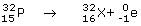
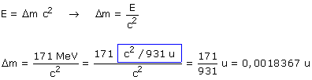

Conservación del número másico: 32 = A + 0, A = 32 Conservación del número atómico: 15 = Z - 1, Z = 16 Reacción ajustada:  Para curiosos: el número atómico 16 corresponde al azufre En esta reacción desaparece masa que se convierte en energía cinética de los productos. Esta energía cinética se reparte de forma inversamente proporcional a la masa, como el electrón tiene una masa muy pequeña se llevará practicámente toda la energía liberada en la reacción Entonces la energía liberada en la reacción es 1,71 MeV y la masa desaparecida será:  Suponiendo despreciable la masa del electrón, la masa del núclido X-32 se obtendrá restando a la masa del núclido P-32 la masa desaparecida: 31,973908 - 0,0018367 = 31,972071 u |